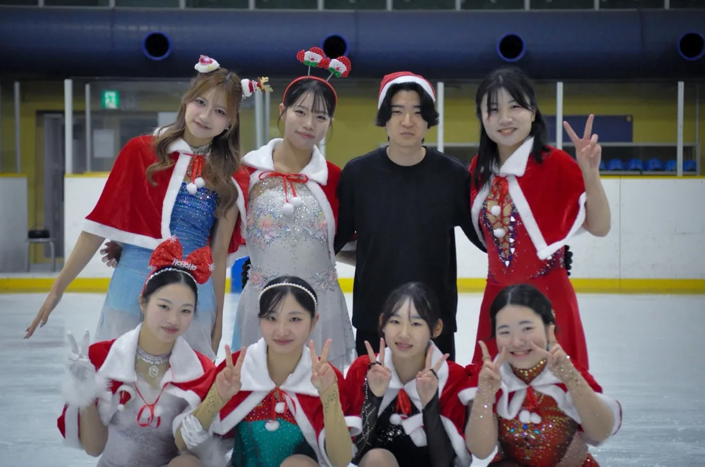
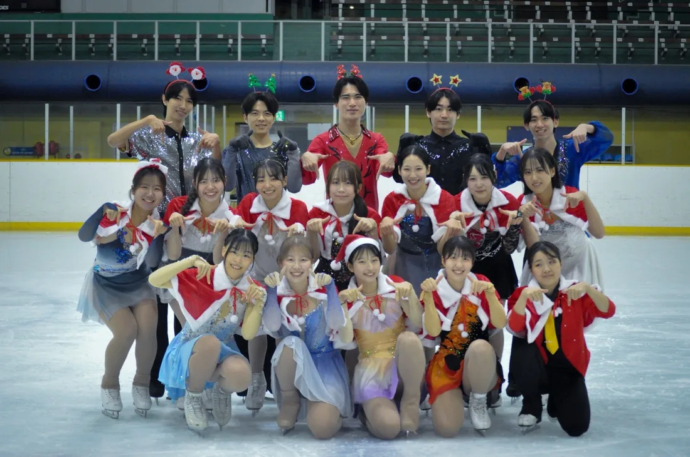
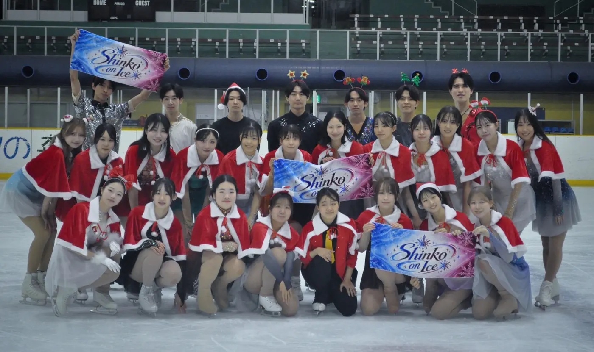

CAMPFIREで招待券付き
リターンを選ぶ
クラウドファンディングのページから、招待券が含まれるリターンをお選びください。


甲南大学と神戸大学、ふたつのフィギュアスケート部がひとつの氷の上に立ちます。学生が企画し、構成し、滑る。
そんなアイスショーを12月の尼崎でお届けします。
この公演は、両大学の部員が中心となってつくりあげる合同アイスショーです。ゲストスケーターをお迎えし、現役生による演技やOB・OGとのコラボレーション、季節にあわせたクリスマスナンバーまで、幅広いプログラムをご用意しています。
CAST & PROGRAM
特別ゲストをお迎えし、甲南大学と神戸大学の現役生とともにお届けします。

HOW TO JOIN
観覧には、CAMPFIREのクラウドファンディングで招待券付きのリターンをお申し込みください。
クラウドファンディングのページから、招待券が含まれるリターンをお選びください。
同じリターンを複数口お申し込みの場合は、1口ずつお手続きください。同じCAMPFIREアカウントで、人数分お申し込みいただけます。
入場受付では、お申し込み時のお名前と支援IDの下4桁をご提示ください。
支援IDは、お申し込み完了時に届く確認メールでご確認いただけます。CAMPFIREに会員登録されている方は、ログイン後の「支援したプロジェクト」からもご確認いただけます。
返礼品も当日会場にてお渡しします。
配送に対応したリターンもご用意しています。内容やお受け取り方法は、CAMPFIREの各リターンをご確認ください。
会場
兵庫県尼崎市扇町43
FAQ
気になることを事前にご確認いただけます。
その他のお問い合わせは、公式InstagramのDMよりお願いいたします。
CAMPFIREのクラウドファンディングページから、招待券付きのリターンをお選びください。招待券はお一人につき1枚必要です。3歳以下のお子さまは招待券なしでご入場いただけます。
同じリターンを複数口お申し込みの場合は、1口ずつお手続きください。同じCAMPFIREアカウントで、人数分お申し込みいただけます。
はい、お子さまもご観覧いただけます。3歳以下のお子さまは入場無料です。4歳以上のお子さまは、お一人につき招待券1枚が必要です。
入場受付では、お申し込み時のお名前と支援IDの下4桁をご提示ください。
支援IDは、お申し込み完了時に届く確認メールでご確認いただけます。CAMPFIREに会員登録されている方は、ログイン後の「支援したプロジェクト」からもご確認いただけます。
はい。配送に対応したリターンもご用意しています。内容やお受け取り方法は、CAMPFIREの各リターンをご確認ください。
スケートリンクの観覧席は冷えやすいため、上着やひざ掛けなど、暖かくしてお越しください。
関係者を除き、公演中の写真・動画の撮影は原則としてご遠慮いただいております。ただし、一部の時間に限り、一般のお客様にも撮影をお楽しみいただける時間を設ける予定です。
NEWS & CONTACT
出演者・演目の情報や当日のお知らせは、公式Instagramで発信します。お問い合わせもDMで受け付けています。
Instagramを見に行く ↗（新しいタブで開きます）FOR SPONSORS
本公演をご支援いただける企業様を募集しております。
協賛メニューや詳細については、下記メールアドレスまでお問い合わせください。